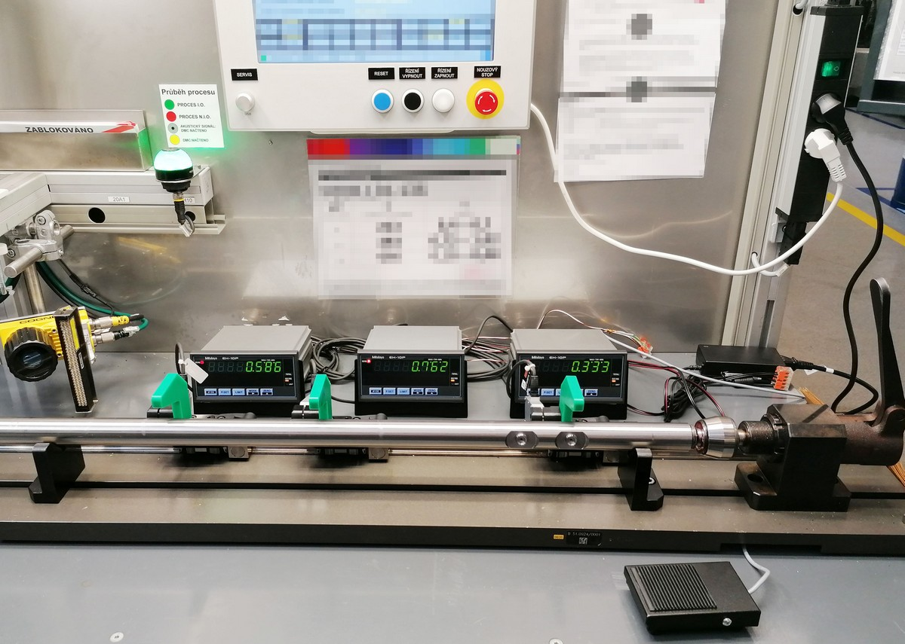
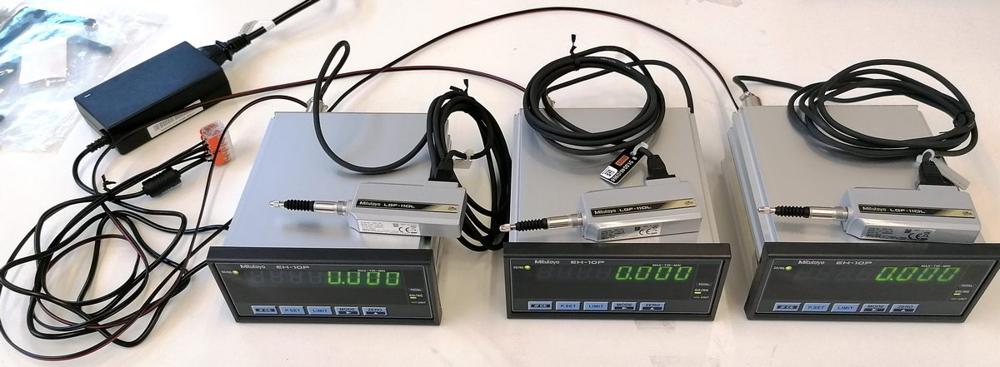
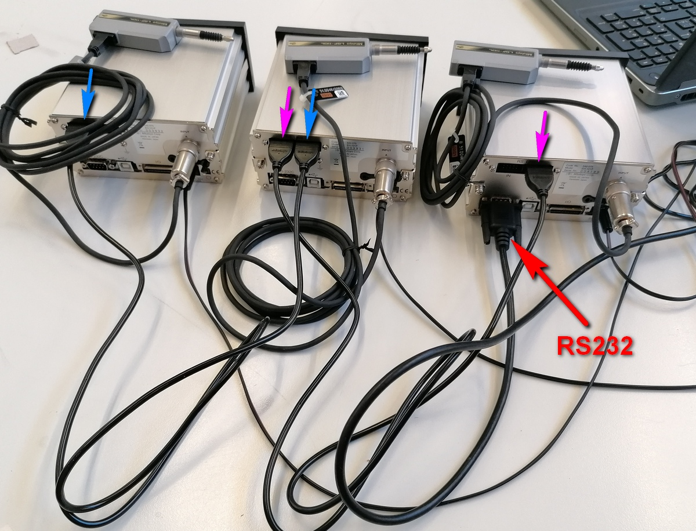
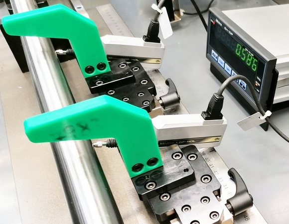
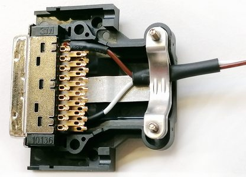

TIR measurement using linear gauges and EH counter
Workplace for runout measurement. Runout is measured on the tube-form workpiece in three positions. Originally, the measurement was made using three standard indicators with manual reading and min-max evaluation at each tube turn. The tube is turned are realized manually by hand. Measurements were slow and its accuracy was affected by human factor resulting in lots of errors.
In the new configuration, there are LGF linear gauges used instead of indicators. They are connected each to their own EH counter. Each counter can assess MIN, MAX and TIR function. Common resetting of all counters is done by pressing of the footswitch.
Stanoviště na měření házení. Házení je měřeno na výrobku ve tvaru trubky na třech stanovených místech. Původně bylo měření prováděno pomocí tří úchylkoměrů s manuálním odčítáním min a max hodnoty při každé otáčce trubky. Trubkou obsluha při měření otáčí volně rukou. Měření bylo pomalé a výsledná přesnost byla značně ovlivněna pečlivostí obsluhy.
V novém uspořádání byly místo úchylkoměrů použity lineární snímače LGF připojené k samostatným EH čítačům (zobrazovacím jednotkám). Uvedené čítače dokáží mj. samy realizovat průběžné zachytávání a vyhodnocování hodnot v režimech MIN, MAX a TIR (= MAX - MIN). Společné nulování čítačů po vložení nového dílu je realizováno stisknutím nožního spínače.

Basic functional set-up after component unpacking. Pay attention to common power supply for all units using one power adapter. It is important for further connection of more inputs or outputs (common ground).
Základní funkční zapojení sestavy po vybalení komponent. Za zmínku stojí realizace společného napájení čítačů z jediného zdroje. To je důležité pro budoucí společné propojení některých vstupů a výstupů (společná země).

Wiring from the back includes data communication cables. The request is data transfer to the computer. There will be tolerance evaluated and final decision of OK / NOK made. The cables fo RS-LINK connection are marked blue and purple. This allows the bus connection of counters 3 -> 2, 2 -> 1 and finally 1 -> PC using RS232.
Propojení zezadu včetně kabelů pro přenos dat - ve druhé fázi realizace je požadavkem přenos dat do počítače, kde bude prováděno finální vyhodnocení tolerancí a výsledné stanovení OK / NOK. Modře a fialově jsou označené kabely propojení RS-LINK, které umožňují řetězené propojení jednotek 3 -> 2, 2 -> 1 a finálně 1 -> PC pomocí RS232.

Detail of gauge fastening. Green parts serve for good protection of gauges only. They prevent tube insertion in the direction from top to bottom perpendicular to gauge spindles. There could be perpendicular contact of the part with the spindle causing its damage if move carelessly. It's necessary to insert the part at an angle in direction of gauge spindles.
Detail upevnění snímačů. Zelené díly slouží k ochraně snímačů, resp. zabraňují vložení trubky do přípravku shora kolmo ke vřetenům snímačů, kdy by při neopatrném pohybu mohlo dojít ke kolmému střetu dílu s vřetenem a jeho ohnutím. Díky ochranám je nutné díl vkládat šikmo zepředu ve směru os vřeten snímačů.

Counters are reset by cable in the phase No. 1. The footswitch on AX input on the I/O connector is used for this. But the software control using RS232 command will be used for resetting in phase No. 2. It would be possible to use the other signals from the I/O connector too, for example for external optical signalization of tolerance evaluation.
V realizační fázi 1 je nulování čítačů prováděno hardwarově pomocí pedálu a AX vstupu na konektoru I/O rozhraní. Ve finální fázi bude realizováno softwarově pomocí RS232 příkazu z řídícího počítače. Z výstupního konektoru by bylo možné vyvést i výstupní signály pro externí optickou signalizaci tolerančního vyhodnocení.